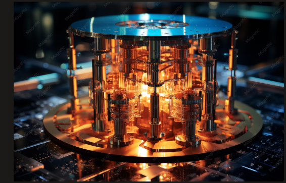

What is a Quantum Computer?

Quantum computing is a rapidly-emerging technology that harnesses the laws of quantum mechanics to solve problems too complex for classical computers.
Qubits vs. Classical Bits
While classical computers use bits (which can be either 0 or 1), quantum computers use quantum bits, or qubits. A qubit can exist in a state of 0, 1, or both simultaneously thanks to a property called superposition.